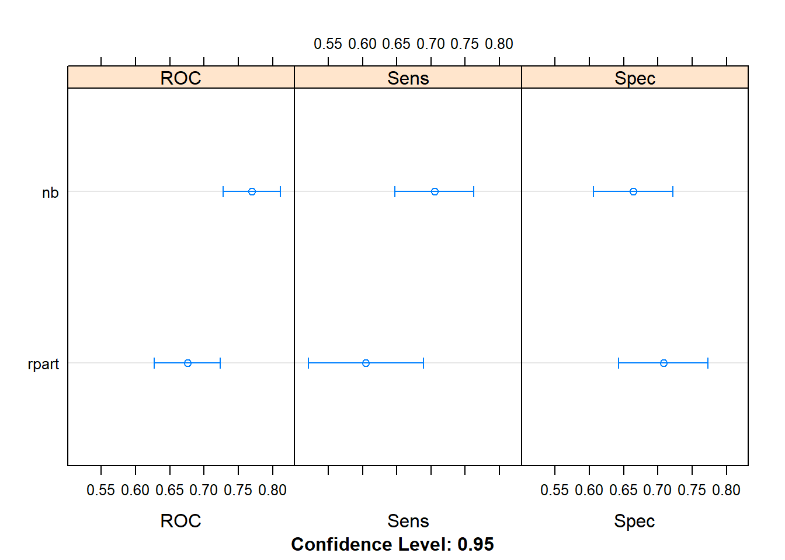
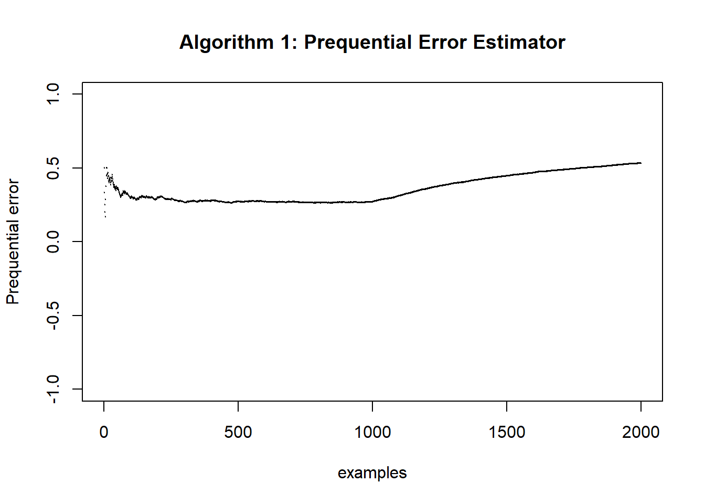

4.9 Lesson 7
2020-04-21
Machine Learning from Data Streams
4.9.1 Repositories
R packages for machine learning in data streams
Python/R connectable software for machine learning in data streams
4.9.2 Prequential evaluation
method presented in Gama, Sebastiao & Rodrigues (2013)
Evaluation of Online Learning Algorithms and Concept Drift Detection
pseudocodes on the article to R:
4.9.2.1 Update prequential Error estimator
itera <- 2000
Pe<-NULL
plot(NULL,xlab = "examples",
ylab = "Prequential error",
xlim = c(0,itera),
ylim = c(-1,1),
main = "Algorithm 1: Prequential Error Estimator")
for (i in 2:itera){
## Loss at example i ##
ei <- ifelse(i<=1000,
rbinom(1, 1,.3),
rbinom(1, 1,.8))
Pe[1]<-0
Pe[i]<-(ei + (i-1)*Pe[i-1]) / i
points(x=i,y=Pe[i],pch=20,cex=.1,col="black")
}
4.9.2.2 Update Prequential Error Estimator in sliding window
w<-50
itera <- 2000
Pw<-NULL
E<-NULL
plot(NULL,xlab = "examples",
ylab = "Prequential error",
xlim = c(0,itera),
ylim = c(-1,1),
main = "Algorithm 2: sliding window")
for (i in 1:itera){
## Loss at example i ##
ei <- ifelse(i<=1000,
rbinom(1, 1,.3),
rbinom(1, 1,.8))
S<-0
E[1:w]<-0
p<-((i-1) %% w) + 1
S<-S - E[p] + ei
Pw[i]=S/min(w,i)
points(x=i,y=Pw[i],pch=20,cex=.1,col="black")
}
4.9.2.3 Update rule for Prequential error estimator using fading factors
a <- 0.999
itera <- 2000
Pa<-NULL
Sa<-NULL
Na<-NULL
plot(NULL,xlab = "examples",
ylab = "Prequential error",
xlim = c(0,itera),
ylim = c(-1,1),
main = "Algorithm 3: using fading factors")
for (i in 2:itera){
## Loss at example i ##
ei <- ifelse(i<=1000,
rbinom(1, 1,.3),
rbinom(1, 1,.8))
Sa[1]<-0
Na[1]<-0
Pa[1]<-0
Sa[i]<-ei + a*Sa[i-1]
Na[i]<-1 + a*Na[i-1]
Pa[i]<-Sa[i]/Na[i]
points(x=i,y=Pa[i],pch=20,cex=.1,col="black")
}
4.9.2.4 Drift detector based on the ratio of two fading factors
# required values
itera<- 2000
a1<-0.999
a2<-0.9
g<-0.1
l<-10
drift<-logical()
# Initialize the error estimators
Sa1<-NULL
Na1<-NULL
Sa2<-NULL
Na2<-NULL
SR<-NULL
mT<-NULL
MT<-NULL
R<-NULL
plot(NULL,xlab = "examples",
ylab = "Drift",
xlim = c(0,itera),
ylim = c(-1,1),
main = "Algorithm 4: Drift detector")
for (i in 2:itera){
## Loss at example i ##
ei <- ifelse(i<=1000,
rbinom(1, 1,.3),
rbinom(1, 1,.8))
R[1]<-0
Sa1[1]<-1
Sa1[i]<-ei + a1*Sa1[i-1]
Na1[1]<-0
Na1[i]<-1+a1*Na1[i-1]
Ma1<-Sa1[i]/Na1[i]
Sa2[1]<-0
Sa2[i]<-ei + a2*Sa2[i-1]
Na2[1]<-0
Na2[i]<-1+a2*Na2[i-1]
Ma2<-Sa2[i]/Na2[i]
R[i]<-Ma2/Ma1
## PH test ##
SR[1]<-0
SR[i]<-SR[i-1] + R[i]
mT[1]<-0
mT[i]<-mT[i-1] + R[i] - SR[i]/i - g
MT<-min(c(MT,mT[i]))
if(mT[i]-MT >= l)
{drift = TRUE} else {drift = FALSE}
points(x=i,y=drift,pch=20,cex=.1,col="black")
}